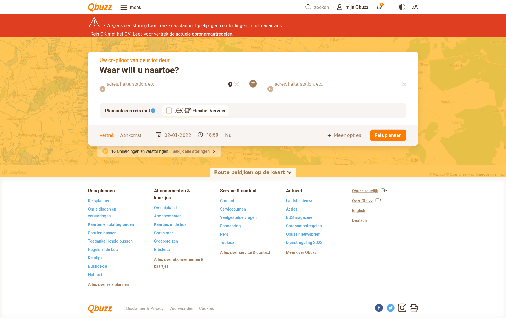

<center><h1>Zoek de route op van Groningen hoofdstation naar het Zuiderdiep</h1></center>
<div class="web-container">
    </img>
    <button class="invis-button" onclick="Main.sendMessage()" style="top: 40.5%; left: 73%; width: 7.6%; height: 4%;"></button>
    <map name="reisplanner">
        <area shape="rect" coords="1277,447,1406,490" onclick="Main.sendMessage()">
    </map>
    <input id="reisplanner-a" class="reisplanner" placeholder="adres, halte, station, etc."></input>
    <input id="reisplanner-b" class="reisplanner" placeholder="adres, halte, station, etc."></input>
</div>
